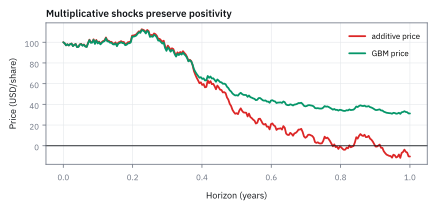
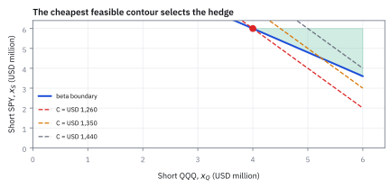
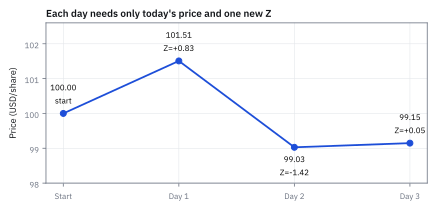
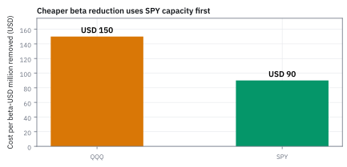

11.1 Definition of Geometric Brownian Motion (GBM)
เปลี่ยนการเดินแบบบวกให้เป็นการเติบโตแบบคูณ
หุ้น \$100 เดินตาม GBM มี drift 12% ความผันผวน 28% สุ่มรายวัน 3 วันแรกได้ Z เป็น +0.83, -1.42, +0.05 ราคาปิดสามวันแรกเป็นเท่าไร และเมื่อครบ 252 วัน ราคาเฉลี่ย ค่า median กับช่วง 5%–95% เป็นเท่าไร?
เฉลย: ราคาปิดสามวันแรกคือ 101.51, 99.03 และ \$99.15; ครบ 252 วันได้ราคาเฉลี่ย \$112.75, ค่า median \$108.42 และช่วง 5%–95% คือ 68.40 ถึง \$171.83
ศัพท์ที่ใช้ในหัวข้อนี้
- Geometric Brownian Motion (GBM)
- stochastic process ที่ให้ราคาเป็นค่าเริ่มต้นคูณ exponential ของ trend และ shock สุ่ม ใช้สร้าง paths ที่เป็นบวกสำหรับ simulation และเป็นฐานของ option model
- drift
- อัตราเติบโตเฉลี่ยของราคาต่อหน่วยเวลาใน price process ใช้กำหนด expected future price ภายใต้ probability measure ที่ระบุ
- volatility
- ขนาดการกระจายของ percent return ต่อรากที่สองของเวลา ใช้วัดความไม่แน่นอนของราคาและสเกล shock ให้ถูกกับ horizon
- log return
- ค่า logarithm ของอัตราส่วนราคาปลายงวดต่อราคาเริ่มงวด ใช้เปลี่ยนการคูณของผลตอบแทนให้เป็นการบวกและทำให้ GBM เขียนง่าย
- Monte Carlo
- วิธีสร้าง random paths จำนวนมากแล้วเฉลี่ย payoff หรือ loss ใช้ประเมินราคาหรือความเสี่ยงเมื่อคำตอบปิดรูปหาได้ยาก
- limited liability
- กติกาที่ผู้ถือหุ้นขาดทุนได้ไม่เกินเงินที่จ่ายซื้อหุ้น ใช้อธิบายว่าราคาหุ้นควรมี lower bound ที่ศูนย์
- stochastic process
- ลำดับของ random variables ที่ถูกจัดตามเวลา ใช้แทนวิวัฒนาการของราคาและความเสี่ยงบนทุก horizon
- stochastic differential equation (SDE)
- สมการที่มีทั้ง deterministic time term และ Brownian random term ใช้ระบุ dynamics ต่อช่วงเวลาที่เล็กมากของราคา
- Markov process
- process ที่ conditional distribution ของอนาคตขึ้นกับ state ปัจจุบันโดยไม่ต้องเก็บอดีตทั้งหมด ใช้ลด memory ของ simulation engine
- standard deviation
- รากที่สองของ variance ซึ่งวัดขนาดการกระจายรอบค่าเฉลี่ย ใช้แปลความผันผวนเป็น uncertainty ตาม horizon
- variance
- ค่าเฉลี่ยของ squared deviations รอบค่าเฉลี่ยใช้วัดการกระจายของ random shock ก่อนแปลงเป็น standard deviation
- payoff
- เงินที่ contract หรือ position จ่ายเมื่อถึง state หรือวันกำหนด ใช้แปลง simulated price path เป็นมูลค่าที่ต้องประเมิน
- slippage
- ส่วนต่างระหว่างราคาที่คาดว่าจะได้กับราคาที่ execute จริง ใช้หัก execution cost ออกจาก model P&L
- random walk
- กระบวนการที่ค่าขยับทีละขั้นด้วย shock สุ่มที่เป็นอิสระ ใช้เป็นจุดเริ่มต้นของการจำลองราคาในตลาดการเงิน
- lognormal
- distribution ของค่าที่มี log เป็น normal ใช้เป็นแบบจำลองราคาหุ้นที่ไม่มีวันติดลบและมี skewness ทางขวา
- United States (US)
- ตลาดและสกุลเงินของตัวอย่างในหนังสือ ใช้ตรึง context ของ ticker, calendar และ USD reporting ให้ไม่ปะปนกับตลาดอื่น
สัญลักษณ์ที่ใช้ในหัวข้อนี้
| สัญลักษณ์ | ความหมาย | หน่วย |
|---|---|---|
| $S_t$ | ราคาหุ้น ณ เวลา $t$ | USD/share |
| $S_0$ | ราคาหุ้น ณ เวลาเริ่มต้น | USD/share |
| $t,\Delta t$ | เวลาและความยาวของหนึ่ง step | year |
| $\mu$ | price drift ต่อปี | $1/\mathrm{year}$ |
| $\sigma$ | annual volatility | $1/\sqrt{\mathrm{year}}$ |
| $W_t$ | Standard Brownian Motion ที่เวลา $t$ | $\sqrt{\mathrm{year}}$ |
| $Z$ | standard normal draw สำหรับหนึ่ง step | ไม่มีหน่วย |
ที่มาที่ไป: ก่อนจะมาเป็นสูตรนี้ เขาลองอะไรมาก่อน
สูตรนี้ไม่ได้โผล่มาจากสุญญากาศ มันเป็นรุ่นที่สองของความพยายามที่กินเวลาหกสิบปี
รุ่นแรกเป็นของ Louis Bachelier ในปี 1900 ซึ่งเป็นคนแรกที่เสนอว่าราคาหุ้นเคลื่อนที่เหมือน อนุภาคที่ถูกชนไปมาแบบสุ่ม เขาเขียนว่าการเปลี่ยนแปลงของ *ราคา* เป็นตัวสุ่ม คือราคาบวกลบทีละก้อนแบบไม่มีทิศทางแน่นอน
แนวคิดนั้นถูกครึ่งหนึ่ง แต่มีปัญหาสองข้อที่ใหญ่เกินกว่าจะมองข้าม
ปัญหาข้อแรก ราคาติดลบได้ ถ้าสิ่งที่สุ่มคือจำนวนเงินที่บวกลบ ก็ไม่มีอะไรกันไม่ให้ราคาลงต่ำกว่าศูนย์ ซึ่งขัดกับความจริงที่ว่าผู้ถือหุ้นเสียได้มากที่สุดคือเงินที่ลงไป
ปัญหาข้อที่สอง ความผันผวนไม่สมเหตุสมผล ถ้าความผันผวนเป็นจำนวนเงินคงที่ หุ้นราคา \$10 กับหุ้นราคา \$1,000 จะแกว่งวันละเท่ากันเป็นดอลลาร์ ซึ่งไม่ตรงกับสิ่งที่เห็นในตลาดเลย เพราะคนคุยกันเป็นเปอร์เซ็นต์ ไม่ใช่เป็นดอลลาร์
รุ่นที่สองมาในปี 1965 โดย Paul Samuelson ซึ่งแก้ทั้งสองข้อด้วยการเปลี่ยนเพียงจุดเดียว คือให้สิ่งที่สุ่มเป็น *ผลตอบแทน* แทนที่จะเป็นตัวเงิน สองขั้นถัดไปคือการเขียนความคิดนั้นเป็นสมการ
จากเส้นตรงบวกสุ่มสู่ exponential: หกสิบปีของการลองผิด
ระหว่างสองรุ่นนั้น ปี 1959 นักฟิสิกส์ M. F. M. Osborne วัดราคาหุ้นจริงแล้วพบว่า log ของราคา ไม่ใช่ตัวราคา ที่เดินแบบสุ่มคล้ายอนุภาค Samuelson จึงเอา random walk ไปใส่เป็นเลขชี้กำลังของ e ราคาจึงเป็นบวกเสมอ และผลตอบแทนเป็นสัดส่วนของราคาปัจจุบัน ตรงกับที่ตลาดรายงานเป็นเปอร์เซ็นต์
เครื่องมือที่ทำให้ทุกอย่างเข้มงวดทางคณิตศาสตร์ คือ stochastic calculus ของ Kiyosi Itô ซึ่งพัฒนาราว ๆ ทศวรรษ 1950 Itô's lemma (สร้างในบทที่ 12) ทำให้พิสูจน์ได้ว่า exponential ของ Brownian with drift เป็นเส้นต่อเนื่องที่มี distribution ตรงตามที่ Samuelson ต้องการ
เริ่มจากโจทย์ของ risk engine
โต๊ะเทรดต้องการสร้าง scenario จำลองราคาหุ้น \$100 ด้วย drift ของราคา 12% ต่อปี ความผันผวน 28% ต่อปี และก้าวเวลารายวันทำการ 1/252 ปี model ต้องขยายความผันผวนตามเวลาอย่างถูกต้อง รับเฉพาะราคาปัจจุบันโดยไม่ต้องจำประวัติเส้นทาง และต้องไม่ปล่อยให้ราคาหุ้นติดลบเด็ดขาด
ขั้นที่ 1 — GBM ในรูป continuous time
จุดตั้งต้นคือ Brownian motion with drift ซึ่งเป็นเส้นตรง บวกก้อนสุ่ม เดินได้ทั้งค่าบวกและลบ
ถ้าเอาเส้นนั้นไปเป็นราคาตรง ๆ ราคาจะข้ามศูนย์ลงเป็นลบได้ ซึ่งหุ้นทำไม่ได้ เพราะ limited liability ผู้ถือหุ้นจะเสียได้มากสุดแค่เงินที่ลงไป
วิธีแก้ของ Samuelson คือเอา Brownian with drift ไปเป็น exponent ของ $e$ แทน exponential เปลี่ยนเส้นที่ข้ามศูนย์ได้ ให้กลายเป็นค่าบวกเสมอ โดยไม่เสียสมบัติต่อเนื่องหรือ increment ที่เป็นอิสระ
เริ่มจากของที่รู้แล้ว: Brownian motion with drift ซึ่งเป็นเส้นตรง $X_t$ ที่เดินไป ๆ มา ๆ ได้ทั้งค่าบวกและลบ ไม่เหมาะเป็นราคาโดยตรง
จึงเอา $X_t$ ไปเป็นเลขชี้กำลังของ $e$ — exponential รับ input ได้ทุกค่า แต่ output เป็นบวกเสมอ นี่คือเหตุผลที่ GBM ให้ราคาติดลบไม่ได้
parameter $\mu$ ตั้งไว้ให้เป็น price drift แต่ใน exponent ปรากฏเป็น $\mu-\sigma^2/2$ ซึ่งเรียกว่า log drift — ความต่างนี้จะอธิบายทีละขั้นในหัวข้อ 11.2
ทำไมต้อง $e$ ไม่ใช่ฐานอื่น
ถ้าเปลี่ยนฐานจาก $e$ เป็นเลขสอง ราคาก็ยังเป็นบวกเสมอเหมือนกัน คำถามคือแล้วทำไมทุกตำราถึงเลือกฐานเดียวกันหมด
เหตุผลอยู่ที่สมบัติข้อเดียว เมื่อหา derivative ของมัน ผลลัพธ์คือตัวมันเองไม่เปลี่ยนรูป ฐานอื่นจะมีตัวคูณ logarithm ของฐานติดออกมาทุกครั้งที่หาอัตราการเปลี่ยนแปลง และตัวคูณนั้นจะพอกพูนขึ้นทุกขั้นของการคำนวณ
ผลคือเมื่อใช้ Itô's lemma ในบทที่ 12 สมการจะไม่งอกพจน์ใหม่ที่ต้องตามเก็บ และอนุกรม Taylor ของมันมีพจน์ครบทุกอันดับ น้ำหนักเป็นบวกทั้งหมด ต่างจาก sine หรือ cosine ที่พจน์ขาดเป็นช่วงและสลับเครื่องหมาย
ถ้าจะใช้ฐานสองจริง ๆ ก็ทำได้ ทุกผลลัพธ์ยังถูก เพียงแต่ต้องแบก logarithm ของสอง ติดไปทุกบรรทัดจนจบบท นั่นคือราคาที่จ่าย ไม่ใช่ความผิดพลาด
ทำไมต้องคูณแทนบวก
ถ้า shock หนึ่งเปอร์เซ็นต์กระทบหุ้น \$10 และ \$1,000 ด้วย dollar amount เดียวกัน ผลจะไม่สมเหตุผลกับตลาด. GBM ให้ shock เดียวกันเป็น percent move จึงเทียบสินทรัพย์ต่างระดับราคาได้ และ exponential กันราคาข้ามศูนย์แบบไม่ต้องใส่ if statement—คณิตศาสตร์ทำงานแทน intern
แล้วเอาไปใช้ทำอะไรได้จริงบ้าง
แบบจำลองที่ให้ราคาเติบโตแบบคูณ เป็นแบบจำลองราคาหุ้นมาตรฐานของทั้งอุตสาหกรรม
ใช้จำลองราคาในอนาคตสำหรับการวางแผนพอร์ตและการทดสอบความเสี่ยง
ใช้เป็นข้อสมมติของสูตรตั้งราคา option ทุกสูตรมาตรฐาน
ใช้เขียนโค้ดจำลองที่รันได้ทันที เพราะสูตรเดินหน้าหนึ่งก้าวเป็นสูตรปิดที่ตรงเป๊ะ ไม่ใช่การประมาณ
Figure 11.1a — บวก shock เป็นดอลลาร์ ราคาติดลบได้ คูณเป็นตัวคูณไม่ติดลบ

สองเส้นใช้ตัวสุ่มชุดเดียวกัน 252 วัน และตั้ง drift ให้ติดลบแรงเพื่อให้เห็นชัด เส้นแดงบวก shock เป็นดอลลาร์ตรง ๆ ลงต่ำกว่าศูนย์ตั้งแต่วันที่ 196 และจบปีที่ −\$10.38 ซึ่งหุ้นจริงเป็นไม่ได้ เส้นเขียวเป็น GBM ที่เอา shock เดียวกันไปไว้ในเลขชี้กำลังของ e ต่ำสุด 30.83 จบที่ \$31.19 ร่วงแรงแค่ไหนก็ยังเป็นบวก
ขั้นที่ 2 — นิยามรูปที่สอง: เขียนเป็นอัตราการเปลี่ยนแปลงในช่วงสั้น
สมการ $dS_t=\mu S_t\,dt+\sigma S_t\,dW_t$ เรียกว่า stochastic differential equation (SDE) ของ GBM
มันบอกว่าการเปลี่ยนราคาในช่วงเล็ก ๆ ประกอบด้วยสองส่วน: drift $\mu S_t\,dt$ ที่คาดเดาได้ กับ diffusion $\sigma S_t\,dW_t$ ที่สุ่ม ทั้งสองเป็นสัดส่วนกับราคาปัจจุบัน
สูตรขั้นที่ 1 (exponential form) กับสูตรนี้ (SDE form) เทียบเท่ากัน: ถ้ามีอันหนึ่ง สร้างอีกอันได้เสมอ ถ้ารู้ $X_t$ ก็ได้ $S_t$ จาก exponential; ถ้ารู้ $dS_t$ ก็ใช้ Itô reverse กลับไปหา $dX_t$
เริ่มจากตัว Brownian with drift $X_t$ ที่เราใช้เป็น exponent ในขั้นที่ 1 แล้วถามว่า $S_t=S_0 e^{X_t}$ เปลี่ยนอย่างไรเมื่อ $X_t$ ขยับ
Itô's lemma ซึ่งบทที่ 12 จะสร้างให้เต็มรูป ให้สูตรเทียบได้กับ Taylor expansion แต่มีพจน์ second-order $(dX)^2$ ที่ไม่ตายเหมือน calculus ปกติ เพราะ $(dW)^2=dt$ ไม่ใช่ศูนย์
พจน์ $-\sigma^2/2$ จาก drift ของ $X_t$ หักล้างกับพจน์ $+\sigma^2/2$ จาก Itô correction พอดี ทำให้ drift ของระดับราคา $S_t$ เหลือแค่ $\mu S_t$ ตรงกับ convention ที่ $\mu$ คือ expected price growth
ตรงนี้คือเหตุผลลึก ๆ ที่ exponent มี $-\sigma^2/2$: ไม่ใช่การปรับอะไรพิเศษ แต่เป็นผลของ Itô calculus ที่บังคับให้ exponential ของ Brownian motion มี drift correction term ติดมาเสมอ
อ่าน correction ให้ถูกก่อนจำสูตร
พจน์ใน exponent เป็น $\mu-\sigma^2/2$ ไม่ใช่ drift price ที่เปลี่ยนชื่อ มันเป็น log drift: quadratic variation ของ Brownian shock ดัน expectation ของ exponential ขึ้นพอดี จึงต้องหัก $\sigma^2/2$ เพื่อให้ expected price โตที่ $\mu$ หัวข้อ 11.2 จะพิสูจน์การหักล้างนี้ทีละบรรทัด
ทำไม correction ต้องเป็น $-\sigma^2/2$ พอดี
ลองนึกถึงราคาที่ขยับขึ้นหนึ่งเปอร์เซ็นต์แล้วลงหนึ่งเปอร์เซ็นต์ สัญชาตญาณบอกว่าต้องกลับมาที่เดิม แต่ลองคูณดูจริง ๆ 1.01 คูณ 0.99 ได้ 0.9999 ขาดไปหนึ่งในหมื่น และยิ่งแกว่งแรง ส่วนที่ขาดยิ่งโตเร็วแบบกำลังสอง
สาเหตุคือการขึ้นลงเป็นเปอร์เซ็นต์ไม่ได้บวกกัน มันคูณกัน และการคูณของสองตัว ที่เบี่ยงคนละทางเท่ากัน ให้ผลน้อยกว่าหนึ่งเสมอ นี่คือความจริงทางเลขคณิตล้วน ๆ ยังไม่เกี่ยวกับ model อะไรเลย
ในการคำนวณแบบปกติ ถ้าเส้นทางราบเรียบ พจน์อันดับสองจะเล็กจนตัดทิ้งได้ แต่เส้นทางของ Brownian ไม่ราบเรียบ กำลังสองของการขยับไม่ยอมหายไป มันกลับกลายเป็นขนาดเท่ากับช่วงเวลาพอดี
พจน์ที่รอดมานั้นเองที่กลายเป็นตัวหักลบ $-\sigma^{2}/2$ มันไม่ใช่ค่าปรับที่ใครใส่เข้าไปให้สูตรสวย แต่เป็นราคาที่ต้องจ่าย ให้กับความจริงที่ว่าการขึ้นลงสลับกันทำให้ของหดลงเสมอ
สามสมบัติที่ทำให้แบบจำลองนี้ใช้งานได้จริง
นอกจากราคาที่ติดลบไม่ได้ แบบจำลองนี้ยังมีสมบัติอีกสามข้อที่ทำให้คำนวณต่อได้
ข้อแรก ผลตอบแทนแบบ log มี distribution เป็นระฆังคว่ำ ส่วนตัวราคาเองเบ้ไปทางขวา ซึ่งตรงกับความจริงที่ว่าราคาขึ้นได้ไม่จำกัดแต่ลงได้แค่ถึงศูนย์
ข้อสอง ราคาพรุ่งนี้ขึ้นกับราคาวันนี้เท่านั้น ไม่ต้องรู้ว่าเดินทางมาอย่างไร สมบัติข้อนี้ทำให้เขียนโค้ดจำลองได้โดยเก็บตัวเลขตัวเดียว ไม่ต้องเก็บประวัติทั้งเส้น
ข้อสาม ผลตอบแทนของช่วงเวลาที่ไม่ทับกันเป็นอิสระต่อกัน และช่วงที่ยาวเท่ากันมีกฎเดียวกัน ไม่ว่าจะเริ่มนับตอนไหน สมบัติข้อนี้เองที่ทำให้กฎรากที่สองใช้ได้
ทั้งสามข้อเป็นข้อสมมติ ไม่ใช่ข้อเท็จจริงที่วัดมา และตารางท้ายหัวข้อจะบอกว่าแต่ละข้อผิดตรงไหน
ขั้นที่ 3 — นิยามรูปที่สาม: สูตรเดินหน้าหนึ่งก้าวที่รันได้จริง
สูตรนี้คือ exact transition ของ GBM ไม่ใช่ approximation — ไม่ว่า $\Delta t$ จะใหญ่หรือเล็ก
การ simulate ต้องการแค่สองอย่าง: ราคาปัจจุบัน $S_t$ กับตัวสุ่ม $Z$ ที่ดึงจาก standard normal ไม่ต้องเก็บเส้นทางทั้งหมด — นี่คือสมบัติ Markov ที่สืบทอดมาจาก Brownian motion
เริ่มจากสูตร exponential ของขั้นที่ 1 ที่เวลา $t+\Delta t$ แล้วแยก exponent เป็นสองก้อน: ก้อนแรกคือส่วนที่เกิดไปแล้วถึงเวลา $t$ ก้อนที่สองคือส่วนที่จะเกิดในอนาคตอีก $\Delta t$
ก้อนแรกคือ $S_t$ พอดี จึงดึงออกมาหน้า exponential ได้ เหลือก้อนอนาคตที่ขึ้นกับ Brownian increment $W_{t+\Delta t}-W_t$ ตัวเดียว
Brownian increment ในช่วง $\Delta t$ มี variance เท่ากับ $\Delta t$ จึงเขียนเป็น $\sqrt{\Delta t}\,Z$ โดย $Z$ คือ standard normal — สุ่ม $Z$ หนึ่งตัวก็ได้ราคาถัดไป ต้องการแค่ราคาปัจจุบัน ไม่ต้องเก็บประวัติ
Figure 11.1b — drift โตตามเวลา เสียงรบกวนโตตามรากที่สองของเวลา

เส้นน้ำเงินคือ log drift สะสม 8.08% คูณจำนวนปี เส้นส้มคือสองเท่าของ standard deviation (SD) ของเสียงรบกวน 28% คูณรากที่สองของจำนวนปี ช่วงแรกเส้นส้มสูงกว่ามาก เทรนด์จมอยู่ในเสียงรบกวน สองเส้นตัดกันที่ 48.0 ปี ตรงกับขั้นที่ 7 ที่ต้องใช้ 12,105 วันทำการกว่า drift จะเด่นพ้นเสียงรบกวนที่ระดับ t = 2
ขั้นที่ 4 — คิดพจน์ drift และ diffusion ต่อหนึ่งก้าว
โจทย์ให้หุ้นราคา \$100 มี drift 12% ต่อปี ความผันผวน 28% ต่อปี และก้าวเวลารายวันทำการ 1/252 ปี
แยก 0.12 ซึ่งคุมค่าเฉลี่ยของราคา ออกจาก 0.0808 ซึ่งคุม median และอยู่ในเลขชี้กำลัง เพื่อป้องกันไม่ให้คำนวณค่าเฉลี่ยผิดพลาด
drift ต่อวันหารด้วยความยาวก้าวตรง ๆ ได้ 0.00032063 ขณะที่ diffusion โตตามรากที่สองของเวลา ได้ 0.0176383
ขั้นที่ 5 — เดินราคาสามวันแรกตามตัวสุ่มจริง
นำตัวสุ่มมาตรฐานสามวันแรก Z เท่ากับ +0.83, -1.42 และ +0.05 มาคูณกับ diffusion แล้วรวมกับ drift รายวัน
วันแรกได้ shock บวกดันราคาขึ้นเป็น \$101.51 วันที่สองเจอ shock ลบกดราคาร่วงลงมาที่ \$99.03 และวันที่สามปิดที่ \$99.15
แต่ละก้าวคำนวณจากราคาปิดล่าสุดเท่านั้น ไม่ต้องเก็บประวัติในอดีต และตัวคูณที่เป็นบวกเสมอทำให้ราคาหุ้นไม่มีวันติดลบ
ขั้นที่ 6 — การกระจายตัวของราคาเมื่อครบ 252 ก้าว
เมื่อจำลองครบหนึ่งปีหรือ 252 วันทำการ ผลตอบแทนล็อกจะมี distribution ปกติรอบ 0.0808 ด้วย variance 0.0784
ราคาเฉลี่ยปลายปีอยู่ที่ \$112.75 แต่ median อยู่ที่ \$108.42 ต่ำกว่าค่าเฉลี่ย \$4.33 จากการบิดเบี้ยวของ lognormal
เส้นทางส่วนใหญ่จบต่ำกว่าค่าเฉลี่ย โดยมีโอกาส 5% ที่ราคาจะต่ำกว่า \$68.40 และมีโอกาส 5% ที่ราคาจะทะลุ \$171.83
ขั้นที่ 7 — วัดอัตราส่วนสัญญาณต่อเสียงรบกวนและเวลาที่ต้องใช้พิสูจน์เทรนด์
เปรียบเทียบขนาดของความผันผวนรายวันกับแนวโน้ม drift และคำนวณจำนวนวันที่ต้องใช้เพื่อทดสอบทางสถิติ
ในสเกลรายวัน เสียงรบกวนจากความผันผวนใหญ่กว่าแนวโน้ม drift ถึง 55 เท่า ทำให้ไม่มีใครมองเห็นทิศทางบนกราฟวันเดียว
การพิสูจน์ทางสถิติว่า drift เป็นบวกจริงต้องใช้ข้อมูลถึง 48 ปีเต็ม ดังนั้นข้อมูลระยะสั้นจึงใช้วัดได้เพียงความผันผวนเท่านั้น
Figure 11.1c — สามวันแรกของขั้นที่ 5 ทีละขั้น

จุดสี่จุดคือราคาจากขั้นที่ 5 วันแรกตัวสุ่ม +0.83 พาราคาจาก 100 ขึ้นไป 101.51 วันที่สอง −1.42 ลงมา 99.03 วันที่สาม +0.05 ขยับขึ้นนิดเดียวเป็น 99.15 แต่ละก้าวใช้แค่ราคาวันนี้กับตัวสุ่มตัวใหม่หนึ่งตัว ไม่ต้องย้อนดูว่าเมื่อวานมาจากไหน โปรแกรมจำลองจึงเก็บตัวเลขแค่ตัวเดียวต่อเส้นทาง
implementation contract ที่ต้องล็อกก่อนรัน
เก็บ drift และความผันผวนใน annual convention, เลือก 252 trading days ต่อปี, ใช้ currency เดียวกับ position, และบันทึก random seed สำหรับ reproducibility อย่าปะปน simple return กับ log return; noise ต้อง scale ด้วยรากที่สองของ elapsed time มิฉะนั้น daily risk จะเล็กผิดระดับขนาดหนึ่ง
Figure 11.1d — ราคาหลัง 252 วันจากขั้นที่ 6

เส้นโค้งคือ density ของราคาหลังหนึ่งปี เริ่ม \$100 drift 12% ความผันผวน 28% ช่วงแรเงาคือ 5% ถึง 95% จาก 68.40 ถึง \$171.83 ด้านขวายาวกว่าด้านซ้าย เส้นทึบคือ median 108.42 เส้นประคือค่าเฉลี่ย 112.75 ห่างกัน \$4.33 เพราะราคาสูง ๆ ทางขวาดึงค่าเฉลี่ยขึ้น แต่ไม่ดึง median
คำตอบ — การจำลองราคาหุ้นด้วย GBM ทีละวัน
คำถาม: หุ้นราคา \$100 เดินตาม GBM มี drift 12% ต่อปี ความผันผวน 28% ต่อปี สุ่มรายวัน 3 วันแรกได้ตัวสุ่ม Z เท่ากับ +0.83, -1.42 และ +0.05 ราคาปิดสามวันแรกเป็นเท่าไร และเมื่อครบ 252 วัน ราคาเฉลี่ย ค่า median กับช่วง 5%–95% เป็นเท่าไร?
ของที่มี (ขั้นที่ 4 ถึง 7): ราคาตั้งต้น \$100, drift รายวัน 0.00032063, diffusion รายวัน 0.0176383, ตัวสุ่ม Z สามวันแรก (+0.83, -1.42, +0.05)
1 ตัวคูณต่อวันคือ exp(0.00032063 + 0.0176383 × Z)
2 ราคาปิดสามวันแรก: วันที่หนึ่ง \$101.51, วันที่สอง \$99.03, วันที่สาม \$99.15
3 เมื่อครบ 252 วันทำการ: ราคาเฉลี่ย \$112.75, ค่า median \$108.42 และช่วง 5%–95% คือ 68.40 ถึง \$171.83
4 สัญญาณต่อเสียงรบกวน: ความผันผวนรายวันใหญ่กว่า drift ถึง 55.0 เท่า ต้องใช้เวลาเก็บข้อมูล 12,105 วันทำการ (48.0 ปี) เพื่อยืนยัน drift ที่ระดับนัยสำคัญ
ตรวจเองใน 10 วินาที: คำนวณค่าเฉลี่ย $100 e^{0.12} = 112.75$ USD, ค่า median $100 e^{0.0808} = 108.42$ USD และราคาจำลองวันแรก $100 e^{0.01496} = 101.51$ USD ตรงกันทั้งหมด
แปลว่าอะไรบนโต๊ะเทรด: การคำนวณ risk model ใช้ข้อมูลไม่กี่เดือนก็วัดความผันผวนได้แม่นยำ แต่ไม่มีใครพิสูจน์ expected return จากประวัติราคา 3–5 ปีได้ เพราะเสียงรบกวนรายวันใหญ่กว่าเทรนด์ถึง 55 เท่า สิ่งที่คนคิดว่าเป็นเทรนด์มักเป็นเพียงเสียงรบกวนสุ่ม
ตัวอย่างเสริม — การคำนวณ P&L ของพอร์ต 20,000 หุ้น
โจทย์ให้อะไรมาบ้าง: ถือหุ้น 20,000 หุ้น ราคาเริ่ม \$100 มูลค่าพอร์ตเริ่ม \$2,000,000 ราคาจำลองวันที่หนึ่งปิดที่ \$101.51
คำตอบ: มูลค่าพอร์ตใหม่ 20,000 × 101.51 = \$2,030,200 กำไรรายวันเท่ากับ \$30,200
ตรวจเองใน 10 วินาที: กำไร \$1.51 ต่อหุ้น คูณ 20,000 หุ้น ได้ \$30,200
แปลว่าอะไร: ตัวคูณเปอร์เซ็นต์ของ model ถูกคำนวณที่ระดับราคาหุ้นก่อน แล้วจึงนำไปคูณจำนวนหุ้นในพอร์ตเพื่อหา P&L เป็นดอลลาร์
โค้ดตรวจการจำลองราคาหุ้นด้วย GBM
import numpy as np
S0 = 100.0
mu = 0.12
sigma = 0.28
dt = 1 / 252
log_drift = mu - 0.5 * sigma**2
step_drift = log_drift * dt
step_diff = sigma * np.sqrt(dt)
assert np.isclose(log_drift, 0.0808)
assert np.isclose(step_drift, 0.00032063, atol=1e-7)
assert np.isclose(step_diff, 0.0176383, atol=1e-6)
z_draws = [0.83, -1.42, 0.05]
prices = []
S = S0
for z in z_draws:
S = S * np.exp(step_drift + step_diff * z)
prices.append(round(S, 2))
assert prices == [101.51, 99.03, 99.15]
mean_1y = S0 * np.exp(mu * 1.0)
median_1y = S0 * np.exp(log_drift * 1.0)
q05_1y = S0 * np.exp(log_drift - 1.6449 * sigma)
q95_1y = S0 * np.exp(log_drift + 1.6449 * sigma)
assert np.isclose(mean_1y, 112.75, atol=0.01)
assert np.isclose(median_1y, 108.42, atol=0.01)
assert np.isclose(q05_1y, 68.40, atol=0.01)
assert np.isclose(q95_1y, 171.83, atol=0.01)
ratio = step_diff / step_drift
assert np.isclose(ratio, 55.0, atol=0.1)
N_days = (2 * ratio)**2
assert np.isclose(N_days, 12105, atol=5)
assert np.isclose(N_days / 252, 48.0, atol=0.1)
print("All checks passed.")สคริปต์นี้ตรวจทานตัวเลขก้าวต่อวัน ราคาปิดสามวันแรก ค่าสถิติเมื่อครบหนึ่งปี และระยะเวลาที่ต้องใช้ตรวจจับแนวโน้ม
กับดัก: ใส่ μ = 12% ลงในเลขชี้กำลังตรง ๆ และการใช้ Euler แทน exponential
ถ้าใส่ 0.12 ลงในเลขชี้กำลังแทนที่จะเป็น 0.0808 ราคาเฉลี่ยปลายปีจะกลายเป็น \$117.25 สูงเกินจริง \$4.50 ทันที และผิดสะสมทบต้น ส่วนการใช้ Euler แบบราคาตรง ๆ เป็นเพียงการประมาณที่ยังเปิดช่องให้ราคาติดลบได้
ข้อจำกัด: วิธีนี้สมมติอะไร และของจริงเป็นอย่างไร
| เรื่อง | วิธีนี้สมมติว่า | ของจริงเป็นอย่างไร | ผลที่ตามมาเวลาใช้งาน |
|---|---|---|---|
| ความผันผวนคงที่ | ความผันผวนไม่เปลี่ยน | เปลี่ยนตลอดและเกาะกลุ่ม | ราคา option ที่คำนวณได้ไม่ตรงตลาด เกิดเป็นรอยยิ้มในหัวข้อ 13.5 |
| ไม่มีการกระโดด | ราคาเดินต่อเนื่อง | กระโดดตอนมีข่าว | ความเสี่ยงของเหตุการณ์เดียวถูกประเมินต่ำมาก |
| ผลตอบแทนเป็นระฆังคว่ำ | log return เป็นระฆังคว่ำ | หางอ้วนกว่าชัดเจน | วันที่แย่ที่สุดเกิดบ่อยกว่าที่แบบจำลองบอกหลายเท่า |
สามแถวนี้เป็นที่มาของแบบจำลองขั้นสูงทั้งหมดในบทที่ 13
สรุปที่ใช้ได้จริง
- GBM ให้ราคาเป็นบวกเสมอและมองการเปลี่ยนแปลงเป็นเปอร์เซ็นต์ ไม่ใช่จำนวนเงินคงที่
- $\mu$ คือ drift ของราคาจริง ส่วนในเลขชี้กำลังต้องใช้ log drift $\mu-\sigma^2/2$
- หุ้น \$100 ที่ drift 12% และความผันผวน 28% สุ่มสามวันแรกได้ 101.51, 99.03 และ \$99.15 ครบปีมีค่าเฉลี่ย \$112.75
- ความผันผวนรายวันกลบ drift ถึง 55 เท่า ต้องใช้ข้อมูลถึง 48 ปีจึงจะยืนยัน drift ทางสถิติได้